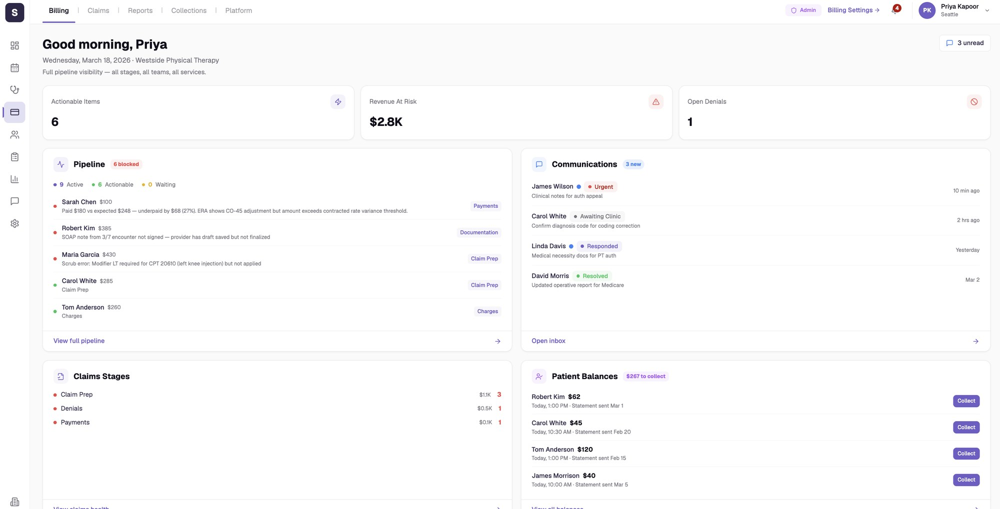
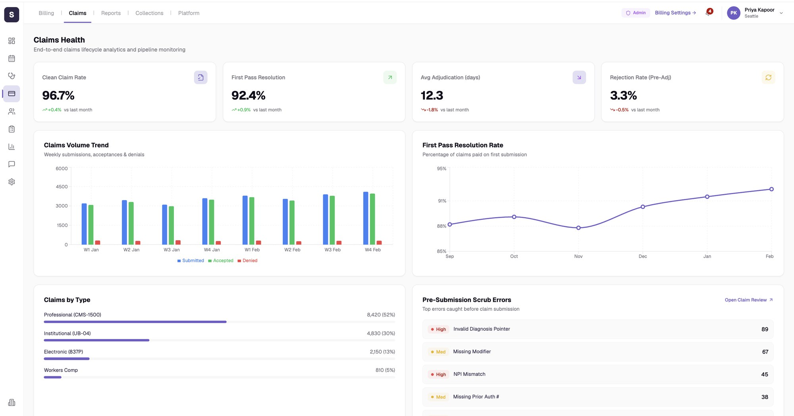
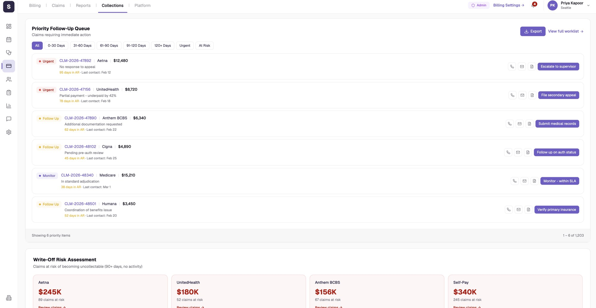
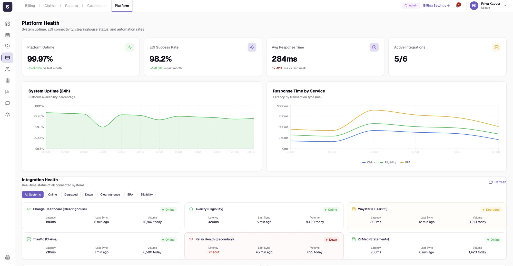

Seven ways to sell one product. So the sidebar is the bracket.
EMR, billing software and RCM services combine differently for almost every clinic, and one billing workspace has to serve all of them.
- Software varies. Spry EMR or an outside one. Spry billing or none.
- Services vary. RCM, eligibility and prior auth, or neither.
- Ownership varies. The clinic's biller or Spry's team does the work. Same screen, different meaning.
- Complexity is real. The fullest build is dense. The simplest must not feel like a leftover.
Seven separate builds drift apart. One screen with unused parts greyed out makes everyone feel they pay for what they cannot use. So each clinic maps to a bracket, B1 to B7, defined on three axes.
Ownership
Who executes: the clinic's biller or Spry's team.
Mode
Execute, collaborate or observe.
State
Where each item sits, from charge to payment.
If it is not in your configuration, it does not exist in your nav.
One denied charge, four configurations
Pick a configuration and see what changes.
| B1Software only | B2+ RCM service | B3Full stack | B7Eligibility only | |
|---|---|---|---|---|
| Denied claim | Work denial | Spry RCM | Spry RCM | No charges |
| Prior auth | Request auth | Request auth | Spry Auth | Verify queue |
| Left rail | Clinical, Billing | + Chat | + Chat | Verify only |
| Biller sees | Buttons | Status, some buttons | Mostly status | Its own product |
Status is always visible. Buttons only appear for work you own.
A task queue, not a dashboard.

- 1Scope, stated up front“Full pipeline visibility: all stages, all teams, all services.” The page says which configuration you are in.
- 2Three numbers, no moreActionable items, revenue at risk, open denials. Everything else earns its place lower down.
- 3Blocked work explains itselfEach item says why it is stuck in plain language, with its stage: Payments, Documentation, Claim Prep, Charges.
- 4Conversations with stateUrgent, Awaiting Clinic, Responded, Resolved, so the inbox sorts itself by who owes the next move.
- 5Money to collect, one tap awayPatient balances carry a Collect button on every row.
Analytics where it helps. Work queues where it counts.


Billing
What needs doing today
Claims
How healthy the pipeline is
Reports
The long view
Collections
Who to chase, in what order
Platform
Whether the plumbing is up
When a connection fails, say so before the numbers do.

- 1System health at a glanceUptime, EDI success rate, response time and active integrations, each against the previous period.
- 2Trends, not just totalsTwenty-four hour uptime and response time by service: claims, eligibility, ERA.
- 3Every connection, filterableClearinghouse, eligibility, ERA and statements, with filters for Online, Degraded and Down.
- 4Failures read firstDown and degraded systems are tinted, so a stuck claim is not mistaken for a payer problem.
What I would carry forward, and what I would change.
The bracket model held up across 15+ major iterations. The honest accounting.
Reference is direction, not a template. My first pass copied reference screenshots literally. Catching that kept each bracket native to its own user.
Designing the densest bracket first means the simplest one still carries some of that complexity in its model. I chose maintainability over a perfectly minimal case.
Prototype B7, the eligibility carve-out, earlier. It stress-tested “remove, do not append” hardest, because it drops billing entirely.